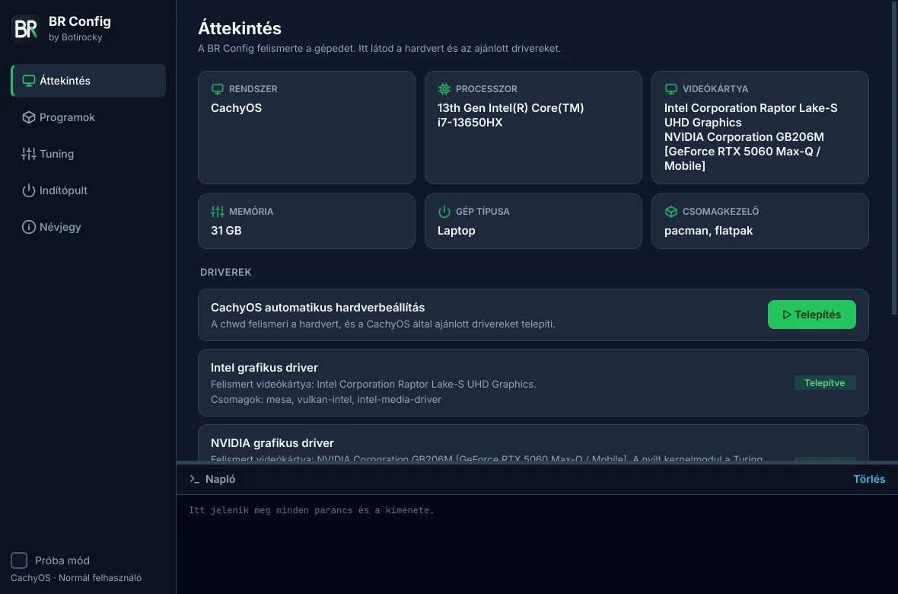

Állítsd be a gépedet úgy, hogy közben pontosan látod, mi történik.
A BR Config felismeri a hardvert, felrakja a hiányzó drivereket és a kedvenc programjaidat, és egy kattintással hangolja a rendszert. Windowson és Linuxon is. Minden lépés előtt megmutatja a parancsot, és minden kapcsoló visszaállítható.
Ingyenes és nyílt forrású (GPL-3.0). Készítette: Botirocky.
-
Teljesítmény energiaprofilJátékhoz: a processzor nem lassít vissza.
-
TCP BBR torlódáskezelésGyorsabb, stabilabb hálózat, főleg wifin.
-
Fájlkiterjesztések mutatásaWindows: látod, ha egy „PDF” valójában .exe.
-
Telemetria minimalizálásaWindows: csak a szükséges diagnosztika megy ki.
Kapcsolj át egy beállítást, és itt látod, mit futtatna a BR Config.
Képernyőképek

Áttekintés: a felismert hardver és az ajánlott driverek, egy kattintással telepíthetők.
Ami egy friss telepítés után kell, egy helyen
Nem kell tíz fórumot végigolvasni, hogy melyik driver kell, és melyik registry-kulcs mit csinál. A BR Config elvégzi helyetted, és közben mindent megmutat.
Gépfelismerés és driverek
Felismeri a processzort, a videókártyákat, a hálózati és hangeszközöket, és ezek alapján ajánl drivert. Linuxon a disztribúciód csomagjait (például NVIDIA-hoz a nyílt kernelmodult, AMD-hez a Mesa Vulkan-drivert), CachyOS-en a chwd-t, Ubuntun az ubuntu-drivers eszközt használja. Windowson a Windows Update-re és a gyártó hivatalos oldalára visz.
- NVIDIA
- AMD
- Intel
- Mikrokód
- Firmware
Programtelepítés egy kattintással
Több mint harminc válogatott program: böngészők, Discord, Steam, OBS, VS Code, LibreOffice és társaik. Kijelölöd, amit szeretnél, és a BR Config a rendszered saját csomagkezelőjével telepíti őket. Ha valami nincs benne, a Flatpakot használja. Egy gombbal mindent frissíthetsz is.
- winget
- pacman
- apt
- dnf
- zypper
- Flatpak
Tuning
Teljesítmény- és energiaprofilok, swappiness, TCP BBR, titkosított DNS, SSD TRIM, Windows Játék mód, egérgyorsítás, telemetria és hirdetési azonosító. Minden kapcsoló a valós állapotot mutatja, és visszaállítható. A takarítás (csomag-gyorsítótár, napló, TEMP, Lomtár) külön gombokon érhető el.
Indítópult
Látod, mi indul el bejelentkezéskor, és egy kapcsolóval letilthatod. Linuxon felülíró .desktop fájllal, Windowson ugyanúgy, ahogy a Feladatkezelő csinálja. Semmit nem töröl, így bármikor visszakapcsolhatod.
Hogyan működik
A BR Config semmit nem csinál a hátad mögött. A rendszer saját eszközeit hívja, és minden parancs a naplóban marad.
Felismer
Indításkor felméri a hardvert, a rendszert és a telepített csomagokat.
Kiválasztod
Bejelölöd a programokat, vagy átkapcsolod a beállításokat. Az egér alatt látod a pontos parancsot.
Engedélyezed
Rendszergazdai lépésnél egyetlen jelszókérés jön (Linuxon pkexec, Windowson UAC).
Ellenőrzöd
A kimenet élőben fut a naplóban. Próba módban semmi nem fut le, csak a parancsok jelennek meg.
Letöltés
A kiadások a GitHubon vannak, minden fájl mellett SHA-256 ellenőrzőösszeggel.
Windows 10 és 11
Telepítő (.exe) vagy hordozható zip. Rendszergazdai jog nélkül is telepíthető; a driverekhez és a telemetria-beállításhoz a program felajánlja az újraindítást rendszergazdaként.
Letöltés WindowsraLinux (x86_64)
Önálló csomag, külön Python nem kell. Arch, CachyOS, Debian, Ubuntu, Fedora és openSUSE alapú rendszereken is működik.
tar xzf BR-Config-*-linux-x86_64.tar.gz
cd BR-Config-*-linux-x86_64
./telepites.shRendszerigény: 4 GB RAM (a program kb. 100 MB-ot használ), 64 bites Windows 10/11 vagy Linux. Forrásból Python 3.12 vagy újabb kell, a kiadások a Python 3.14-gyel készülnek.
Nyílt forrás, átlátható működés
A teljes forráskód a GitHubon van GPL-3.0 licenccel. Hibát találtál, vagy hiányzik egy program a listából? Nyiss egy issue-t, vagy küldj pull requestet.